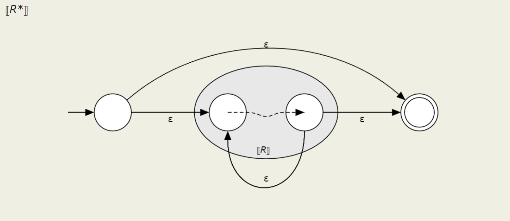
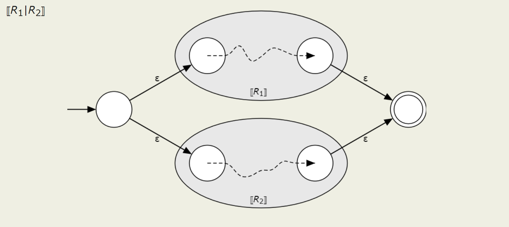
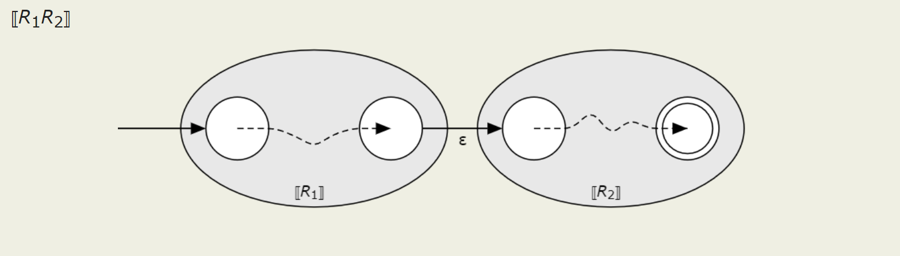
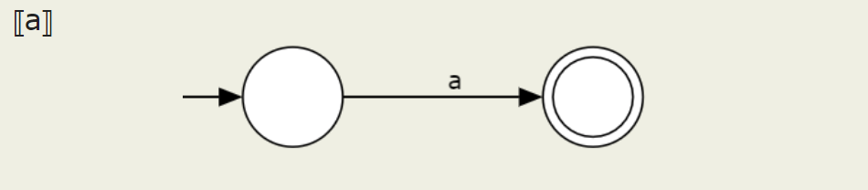
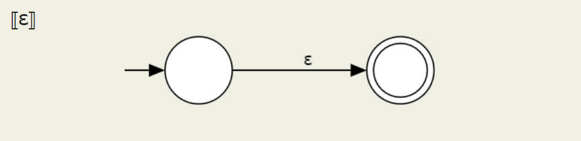

FSA Algorithms, Part 2: Regex to NFA conversion
The next step in this series is the conversion from the regex AST we created in the previous part to an NFA, the representation for which we'll define here.
The structure of this part will be as follows:
- NFA class
- Conversion methodology
- Implementation of conversion methodology
NFA Class
An NFA is defined as a 5-tuple (S, \delta, \Sigma, s, F), where S is the set of states, \Sigma is the alphabet (set of characters or letters), \delta is the transition function \delta : S \times \Sigma \to S, s is the start state, and F \subseteq Sis the set of final states.
Here's a simple class for an NFA:
class NFA:
def __init__(self, states, delta, sigma, start, finals):
self.states = set(states)
self.delta = set(delta)
self.sigma = set(sigma)
self.start = start
self.finals = set(finals)
And here are some nice quality of life additions to the class. We want to be able to print these out nicely, and to see what they look like (we use Graphviz here for that purpose):
def __str__(self):
delta_string = ''
# compress delta by from/to states
delta_compressed = {}
for from_state, to_state, on_char in sorted(list(self.delta)):
if (from_state, to_state) in delta_compressed:
delta_compressed[from_state, to_state].add(on_char)
else:
delta_compressed[from_state, to_state] = {on_char}
for (from_state, to_state), on_char_set in delta_compressed.items():
delta_string += '\t\t{} -> {} : {}\n'.format(from_state, to_state, on_char_set)
out = (
f'{self.type}:\n'
+ '\tStates: {}\n'.format(self.states)
+ '\tSigma: {}\n'.format(self.sigma)
+ '\tStart: {}\n'.format(self.start)
+ '\tFinals: {}\n'.format(self.finals)
+ '\tStates: {}\n'.format(self.states)
+ '\tDelta:\n' + delta_string
)
return out
def __repr__(self):
return str(self)
def show(self, render=True, filename=None, view=False):
assert render or view, 'Please choose to either render as a PDF or view directly.'
if filename is None:
filename = self.type
dot = graphviz.Digraph()
dot.attr(rankdir='LR', size='8,5', constraint='false')
dot.attr(label=r'\n\n{}-state {}'.format(len(self.states), self.type))
for state in self.states:
if state in self.finals:
dot.attr('node', shape='doublecircle')
dot.node(state)
else:
dot.attr('node', shape='circle')
dot.node(state)
dot.attr('node', shape='none', label='')
dot.edge('', self.start)
# compress delta by from/to states
delta_compressed = {}
for from_state, to_state, on_char in sorted(list(self.delta)):
if (from_state, to_state) in delta_compressed:
delta_compressed[from_state, to_state] += f', {on_char}'
else:
delta_compressed[from_state, to_state] = on_char
for (from_state, to_state), on_chars in delta_compressed.items():
dot.edge(from_state, to_state, label=on_chars)
if render:
dot.render(filename + '.gv')
if view:
dot.view()
Conversion methodology
Okay, so we have the class for NFAs done. What now? How do we actually get an NFA from a regex (AST)?
Basically, we divide the regex into building blocks based on type of expression and stick them together using \varepsilontransitions where necessary. We'll go through each of the operator/expression types in the following order:
- Star
- Union
- Concatenation
Star
Recall that (exp)* (or Star(exp) as our AST would represent it) means "zero or more of exp". We can represent this pretty well as an NFA (screenshots stolen from Cornell's CS 4120 course notes, which use Rto represent a given regular expression):

You can see here how the item can either be skipped or traversed as many times as necessary.
Union

Again, it should be clearly visible here how there is a choice between the two expressions.
Concat

One expression is done, then the other.
Letter and empty string


These are simple enough. Next, we'll implement each of these.
Implementation
We'll start with a function to recursively go through the regex AST and call the relevant functions where necessary.
def nfa_of_regex(regex : Regex, sigma : list) -> NFA:
def convert(r : Regex) -> NFA:
if type(r) == Union:
return union(convert(r.left), convert(r.right))
elif type(r) == Concat:
return concat(convert(r.left), convert(r.right))
elif type(r) == Star:
return star(convert(r.exp))
elif type(r) == Letter:
return letter(r.val, sigma)
else:
raise ValueError(f'Not sure what to do with this type: {type(r)}')
return convert(regex)
Next, we need to implement each of the above types of expressions. In order to actually combine these together, though, we'll want to make sure we don't overlap in the names we use for states, otherwise we'll screw up completely.
def generate_unused_name(forbidden : list, excluded=None) -> str:
if excluded is None:
excluded = set()
else:
excluded_states = set()
for other in excluded:
excluded_states |= other.states
excluded = excluded_states
forbidden = set(forbidden)
def generate_name(forbidden):
i = 0
while str(i) in forbidden:
i += 1
return str(i)
new_name = generate_name(forbidden | excluded)
return new_name
def resolve_state_name_conflicts(x : NFA, y : NFA) -> NFA:
'''Returns a modified ver of y with no name conflicts with x'''
name_duplicates = x.states & y.states
y_modified = recreate(y)
for dupe in name_duplicates:
old_state = dupe
new_state = generate_unused_name([], excluded=[x, y_modified])
y_modified = rename_state(y_modified, old_state, new_state)
return y_modified
Now we can merge two automata without worrying about state name conflicts:
def merge_automata(x : NFA, y : NFA) -> NFA:
return recreate(
x,
states=x.states | y.states,
sigma=x.sigma | y.sigma,
start=None,
finals=x.finals | y.finals,
delta=x.delta | y.delta
)
Star
def star(x : NFA) -> NFA:
if x.start is None:
return x
else:
if get_start_string(x) in x.finals:
start = get_start_string(x)
a = x
else:
new_start = generate_unused_name([], excluded=[x])
start = new_start
a = add_state(x, new_start, start=True, final=True)
a = add_transition(a, new_start, get_start_string(x), 'ε')
a_prime = recreate(a)
for final in x.finals:
a_prime = add_transition(a_prime, final, start, 'ε')
a_prime = add_transition(a_prime, start, final, 'ε')
return a_prime
Union
def union(x : NFA, y : NFA) -> NFA:
if x.start is None:
return y
elif y.start is None:
return x
else:
y_prime = resolve_state_name_conflicts(x, y)
xy = merge_automata(x, y_prime)
xy_start = generate_unused_name([], excluded=[xy])
out = add_state(xy, xy_start, start=True)
out = add_transition(out, xy_start, get_start_string(y_prime), 'ε')
out = add_transition(out, xy_start, get_start_string(x), 'ε')
return out
Concat
def concat(x : NFA, y : NFA) -> NFA:
if x.start is None or y.start is None:
return recreate(
x, states=set(), delta=set(),
sigma=x.sigma | y.sigma
)
else:
y_prime = resolve_state_name_conflicts(x, y)
unified = merge_automata(x, y_prime)
def fold_function(a : NFA, state : str) -> NFA:
out = add_transition(
a, state, get_start_string(y_prime), 'ε'
)
return make_unfinal(out, state)
out = make_start(unified, get_start_string(x))
for final in x.finals:
out = fold_function(out, final)
return out
Letters
def letter(c : str, sigma : list) -> NFA:
return NFA(
['0', '1'],
[('0', '1', c)],
sigma,
'0',
['1']
)
And with that, we're done with this section. See you soon(ish)!